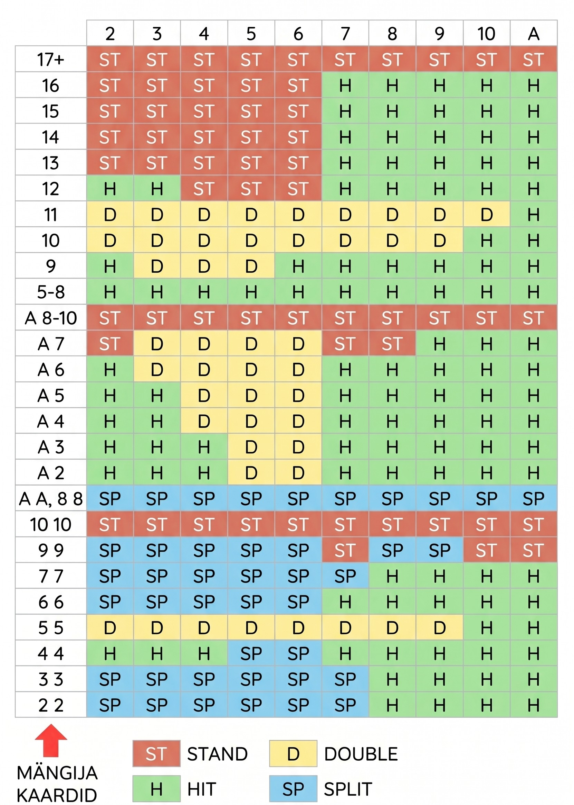

Blackjack on mäng, mis kombineerib õnne ja oskused.
Õppides ära erinevad taktikad, suurendate oma võiduvõimalusi
ja vähendate kaotuste riski. Siin on mõned peamised taktikad, mida saate kasutada:
Põhistrateegia
Blackjacki põhistrateegia on kõige lihtsam strateegia.
Sellega tutvumine annab sulle blackjacki mängimiseks kõik
vajalikud baasteadmised ja oskused.
Blackjacki põhistrateegia (Basic Strategy) on matemaatiliselt
välja töötatud juhiste kogum, mis aitab mängijal valida igas
olukorras kõige soodsama käigu. Strateegia arvestab mängija
kaartide punktisummat ning diileri avatud kaarti.
Selle asemel, et teha otsuseid juhuslikult, saab mängija
kasutada põhistrateegia tabelit, mis näitab, kas tuleks
võtta lisakaart (Hit), jääda seisma (Stand), kahekordistada
panust (Double Down) või jagada kaardid (Split).
Kuidas tabelit lugeda?
Vasakul pool on mängija käe väärtus või kaartide kombinatsioon. Näiteks 16, A,6(äss ja kuus).
Ülareal on diileri avatud kaardi väärtus (2 kuni 10 ja A).
Tabelis olev täht, kus mängija käsi ja diileri kaart ristuvad, näitab, milline käik on matemaatiliselt kõige soodsam.
17+ tähendab käe väärtuseid 17-21, ässa väärtus saab olla 1 või 11.

Mida tasub põhistrateegia kohta veel teada?
Põhistrateegia tabel võib erineda sõltuvalt blackjacki mängu
reeglitest. Näiteks mõjutavad tabeli soovitusi järgmised tingimused:
Pakkide arv: kas mängus kasutatakse ühte või mitut kaardipakki.
Diileri käitumine pehme 17 korral: kas diiler peab pehme 17 puhul lisakaardi võtma või seisma jääma.
Double Down reeglid: kas panust võib kahekordistada ainult teatud käte puhul või igal ajal.
Kui põhistrateegia on selge, siis one veel põhistrateegiat täiendavad tehnikad:
Kaartide lugemine(Card Counting) on üks tuntumaid blackjacki täiustatud
tehnikaid. Selle eesmärk on jälgida, millised kaardid on
juba mängus, ning hinnata selle põhjal allesjäänud
kaardipaki koosseisu.
Selle tehnika aluseks on asjaolu, et kõrgete kaartide (10, J, Q, K ja A)
ning madalate kaartide (2–6) osakaal allesjäänud kaardipakis mõjutab
tõenäosusi, mis kaart järgmisena tuleb.
Mida rohkem on väikseid kaarte välja tulnud, seda suurem eelis on diileril ja majal.
Mida rohkem on välja tulnud suuri kaarte, seda suurem on mängija eelis.
Põhjuseks on see, et diiler peab saama kokku vähemalt 17 punkti.
Kindlustus (Insurance) on lisapanus, mida mängijale pakutakse siis, kui diileri
avatud kaart on äss. See annab mängijale võimaluse
saada väljamakse juhul, kui diileri teine kaart on kümne
väärtusega kaart ja tal on blackjack. Kui diileril on blackjack,
maksab kindlustus tavaliselt välja suhtes 2 : 1. Kui diileril blackjacki
pole, kaotab mängija kindlustuspanuse.
Kindlustus on üldiselt ebasoodne mängijale, kuna see suurendab maja eelist.
Kindlustuse võtmine pole üldjuhul matemaatiliselt kasulik. Selle kasulikkus
sõltub allesjäänud kaartide koosseisust.
Kordussplittimine tähendab juba splittitud paari uuesti jagamist.
Näiteks kui mängija jagab kaks kaheksat kaheks eraldi käeks ning
saab ühele neist uutest kätest veel ühe kaheksa, võib tekkida võimalus
see paar uuesti splittida.
Aga mida sellises olukorras teha? Sellele põhistrateegia ei vasta,
aga vastus on JAH!
Blackjacki põhistrateegia järgi ei ole kümnete
splittimine üldjuhul soovitatav, sest kahe kümne väärtusega
kaardiga on mängijal juba väga tugev käsi – kokku 20 punkti.
Teatud erandlikes olukordades võib seda siiski kaaluda. Näiteks võib diileri avatud kaart olla 5
või 6.
Kuigi isegi sellisel juhul on teil oma 20 punktiga võimalus diilerit võita,
üle 80%. Siis kui kui mängija kasutab kaartide lugemist ja hindab, et allesjäänud
kaardipakis on tavapärasest rohkem kümne väärtusega kaarte. Siis tõenäosus, et diiler
läheb lõhki, üsna suur.
Teised blackjacki tehnikad
On olemas veel ka teisi strateegiaid peale põhistrateegia,
mida võib olla kasulik teada:
„Mitte kunagi lõhki“ (Never Bust Strategy)
Selle strateegia põhimõte on lihtne: kui mängija kaartide punktisumma on vahemikus 12–16,
ei võta ta enam lisakaarte, vaid jääb oma praeguse tulemusega seisma. Seejärel loodab mängija,
et diiler ületab 21 punkti ehk läheb lõhki.
Kui te otsustate siiski, seda strateegiat kasutada, siis
võtke arvesse, et selle strateegiaga suureneb kasiino eelis
4% võrra.
„Järeleahvija“ (Mimic the Dealer Strategy)
Selle strateegia puhul püüab mängija järgida diileri mänguviisi ja talle seotud reegleid.
Põhimõte on lihtne: kui mängija käe väärtus on 16 punkti või vähem,
võtab ta lisakaardi. Kui käe väärtus on 17 või rohkem, ta rohkem kaarte ei võta.
Selle strateegia probleem on selles, et seda kasutades ei kasuta te
splittimist ega duubeldamist, mis on üks parimaid viise suurte võitude saamiseks.
Jutualust strateegiat kasutades, suureneb maja eelis veel rohkem, kui eelmise strateegiaga.